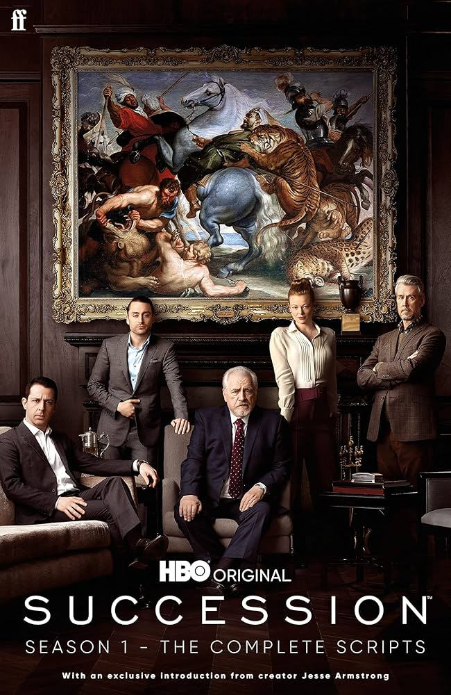
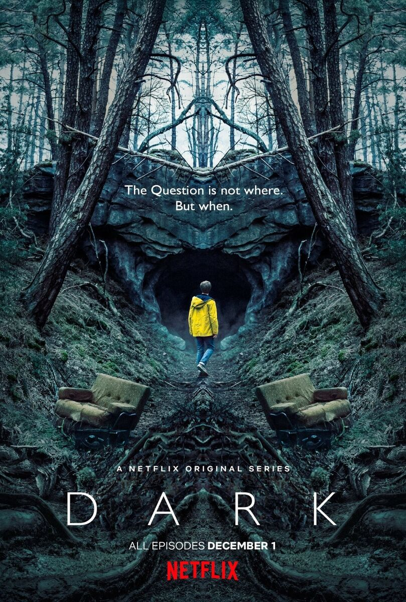
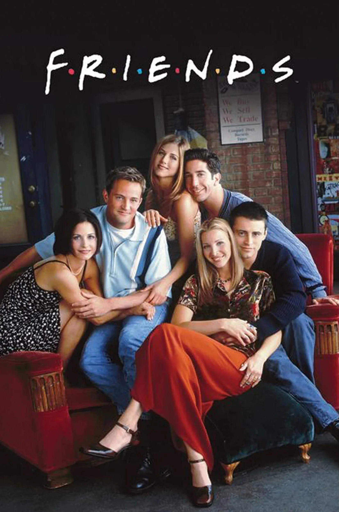

Series

Stranger Things
Un grupo de jóvenes enfrenta fenómenos paranormales en su pequeño pueblo de Hawkins.

Succession
Una familia de multimillonarios lucha por el control de su imperio de medios.

The Witcher
Un cazador de monstruos navega por un mundo lleno de magia, conflictos y criaturas
peligrosas.

The Crown
La vida y los desafíos de la reina Isabel II y la familia real británica a lo largo de su
reinado.

The Mandalorian
Un cazarrecompensas se aventura en misiones peligrosas en los confines del universo de Star
Wars.

The Last of Us
Tras una pandemia devastadora, dos supervivientes recorren un peligroso mundo
postapocalíptico.

House of the Dragon
La precuela de Game of Thrones que sigue el ascenso y conflicto de la casa Targaryen.

Breaking Bad
Un profesor de química se convierte en fabricante de metanfetaminas mientras lucha contra su
diagnóstico terminal.

Peaky Blinders
Una familia de gánsteres en Birmingham lucha por el poder en la Inglaterra de la posguerra.

Dark
En una pequeña ciudad alemana, un misterio de viajes en el tiempo conecta a cuatro familias a través
de generaciones.

Friends
Seis amigos navegan la vida, el amor y la comedia en Nueva York.

The Boys
Un grupo de vigilantes lucha contra superhéroes corruptos que abusan de sus poderes.